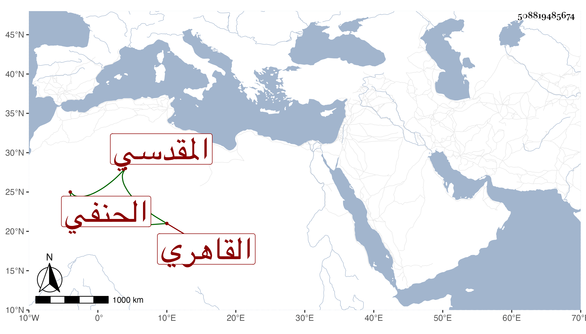

0902Sakhawi.DawLamic.ITO20230111-ara1.EIS1600.508819485674
Biography ID: 508819485674
535
محمود بن إبرهيم بن محمد بن عبد الله بن سعد بن أبي بكر الزين بن البرهاني بن الديري المقدسي الأصل القاهري الحنفي الماضي أبوه وجده . ولد كما أخبر به مع تردده فيه في حياة جده بعد انفصاله عن القضاء إما بعد توجهه لبيت المقدس أو قبيلها وكان توجهه في سنة سبع وعشرين . ومات فيها هناك بالمؤيدية ثم أنه جرى في أثناء كلامه أنه لما حج مع أبيه وعمه كان قد بلغ بحيث كانت حجة الإسلام وكانت في موسم سنة إحدى وخمسين فيكون على هذا مولده بعد سنة ست وثلاثين والأول أشبه فابن عمه البدري ولد في سنة ثمان وثلاثين وهو فيما يظهر أسن منه بكثير ونشأ في كنف أبيه فحفظ القرآن والمغني للخبازي في أصوله ونقم على أبيه كونه لم يقرئه كتابا في الفقه ، والحاجبية واشتغل على عمه القاضي سعد الدين في الفقه وغيره في الكنز وغيره ولازمه كثيرا في سماع الحديث بقراءة المحيوي الطوخي وكذا أخذ في الفقه عن جعفر العجمي نزيل المؤدية ثم فيه وفي غيره عن الزين قاسم الحنفي وفي العربية عن وفي الفرائض عن البوتيجي وناب في القضاء عن عمه فمن شاء الله بعده وحج مع أبيه في موسم سنة إحدى وستين حين حجت خوند وابنها ، فلما عاد استقر في نظر الإصطبل باستعفاء الزيني بن مزهر المستقر فيها بعد أبيه البرهاني في رجب سنة سبع وخمسين ثم انفصل عنها في رمضان سنة خمس وستين بالشرف بن البقري واستمر منقطعا حتى عن نيابة القضاء غالبا وقال أنه عرض عليه في الأيام المؤيدية التكلم في البيمارستان ثم حج في موسم سنة سبع وتسعين وجاور التي تليها وكذا جاور قبلها بعد الثمانين وتكرر دخوله لبيت المقدس وكان به في سنة تسعين .
